Available in the Android Market for FREE.
GooMemo participated in ADC2 in August 2009. The app did not make it to the finals, but "ranked in the top 25% of all applications submitted."
Main screen
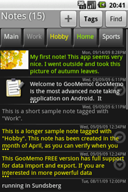Main screen, most recent notes first, tag filter visible.
Color specified by tag.
Long notes contracted, a single click expands the note in-place.
View picture
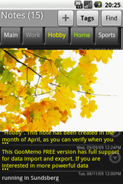Click on a picture thumbnail to animate it to fill the whole screen.
Long click on the picture and the standard Gallery app will show it.
Edit
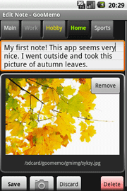Edit note with hardware or software keyboard.
Select associated tag.
Attach a picture with the camera.
Search
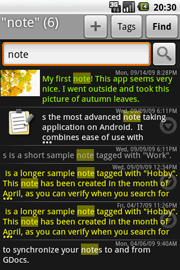Search results are hilighted.
Power search
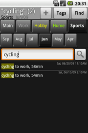All three search filters active: search string, tag and month.
This shot answers: how many times did I cycle during the month of June? Answer: 2 times.
Select for email
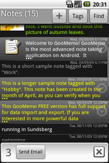Select notes with a finger sweep and email them.
Preferences
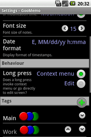Configure settings for your taste.
Add new tags and sort them in your preferred order.
Preferences: tag colors
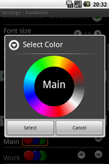Pick color for your tags.
Import & export
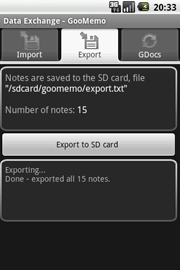Export all notes and tags to a text file.
Import notes and tags from a text file.
Easily author an import file to import your data.
Desktop shortcut
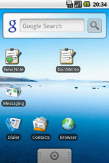Have a "New Note" shortcut on desktop for quick note entry.
Feedback
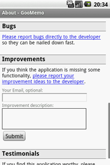Provide feedback with the built-in forms.
Ask for new features...
GDocs spreadsheet synchronization
GooMemo provides a 2-way incremental synchronization with a GDocs spreadsheet in the Google cloud.
View the Help-page in the application for more info.
Sync notes with GDocs
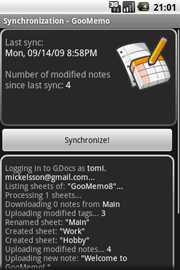Notes being synchronized with GDocs.
Locally edited notes fly up and remotely edited notes fly down.
GDocs web interface
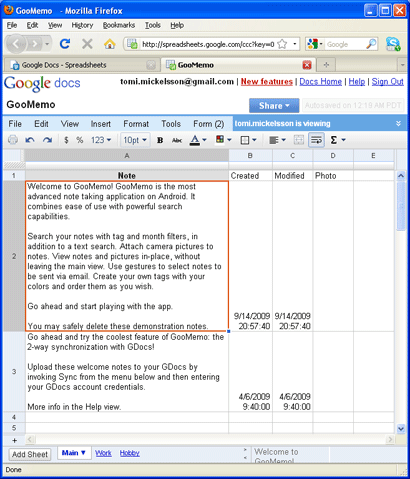Notes in the cloud.
New notes (rows) and new tags (sheets) can be created, existing notes can be edited.
GDocs "New note" form
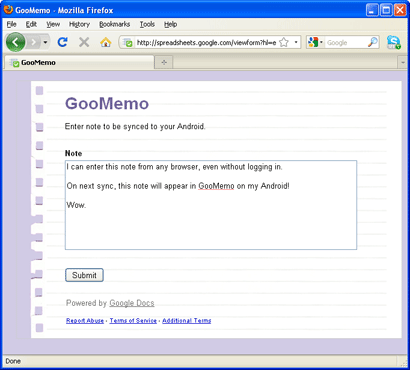Via GDocs form functionality, you can enter new notes super easily from the web to GooMemo, even without logging on to GDocs!